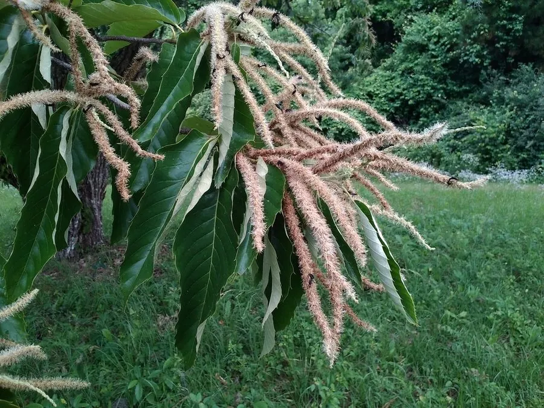

乔木 · 植物界
板栗 Castanea mollissima

中国原产的落叶乔木，坚果富含淀粉、香甜软糯，可糖炒、煮食与制粉，栽培历史逾两千年，有“铁杆庄稼”之称。
- 分类
- 门被子植物门纲木兰纲目壳斗目科壳斗科属栗属
- 栖息环境
- 海拔 1500 米以下的低山丘陵与河滩，喜光耐旱，适宜微酸性土壤
- 地理分布
- 原产中国；河北、湖北、山东、陕西、安徽、浙江等地广泛栽培
- 保护级别
- 暂无评估；中国未列入国家重点保护野生植物名录
物种志
板栗为壳斗科栗属落叶乔木，高 15–20 米，树皮灰褐色、纵裂，小枝被灰白色绒毛。叶片互生，长椭圆形，边缘具刺芒状锯齿，背面被星状毛。花单性，雌雄同株，雄花序为直立的葇荑花序，散发特殊气味；坚果 1–3 粒包藏于密生尖刺的壳斗内，成熟时壳斗 4 瓣开裂，露出深褐色、底部有浅色种脐的栗子。
板栗原产中国，是世界上最古老的栽培果树之一，栽培历史逾两千年，河北迁西、湖北罗田、山东泰安等地是著名产区。它喜光、耐寒、耐旱，适宜土层深厚、排水良好的微酸性沙壤土，常用实生苗嫁接繁殖。栗仁富含淀粉与糖分，可糖炒、煮食、炖鸡或制栗粉、栗酱；木材坚硬耐腐，可制枕木与农具；树叶可饲养柞蚕。板栗在中国有“铁杆庄稼”之称，灾年可代粮充饥。
形态与习性
- 株高15–20 m，树皮纵裂
- 花期5–6 月，雄花序直立、气味特殊
- 果期9–10 月，壳斗密生尖刺
- 光照喜光，光照不足则结实少
- 水分耐旱，花期与果实膨大期需水较多
- 土壤微酸性、深厚排水良好的沙壤土
- 主要用途糖炒栗子、煮食炖菜、制栗粉，木材制农具
趣味知识
- 板栗的果实外面包着密生尖刺的壳斗，采收时需戴厚手套或用夹子。
- 板栗在中国被称为“铁杆庄稼”，灾荒年代可代替粮食充饥。
- 糖炒栗子是京津地区秋冬的经典小吃，加入砂砾可使受热均匀。
- 栗木坚硬耐腐，过去常用于制作枕木、矿柱与农具柄。